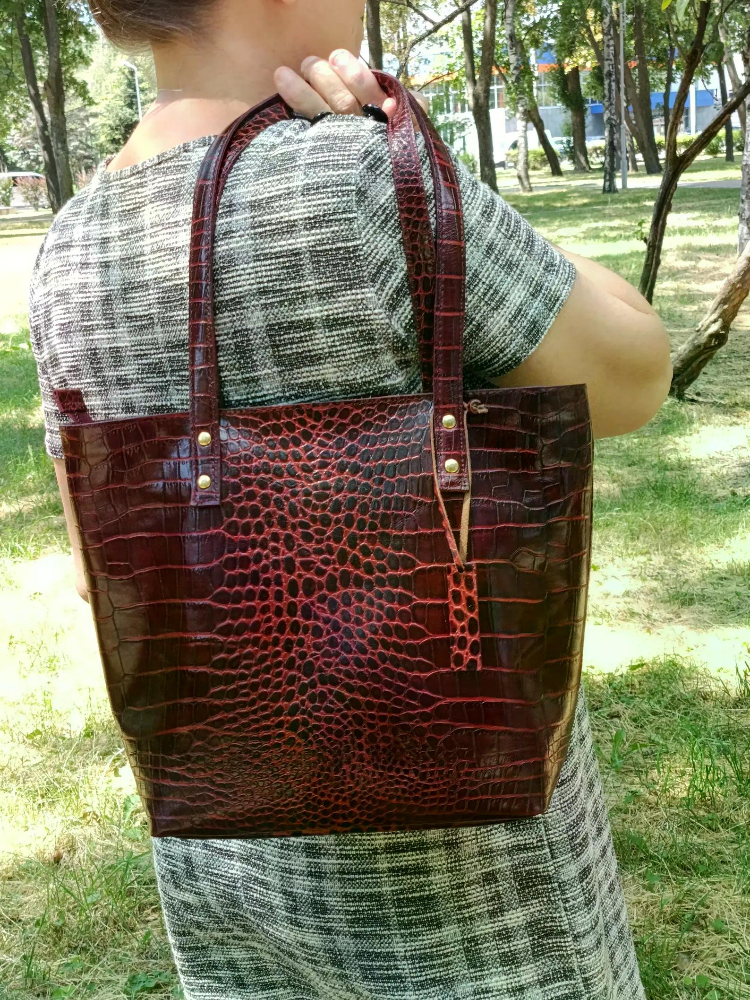

Handmade Croc Embossed Leather Tote Bag – Structured Luxury Handbag for Everyday
Elegant handmade leather tote bag in deep burgundy crocodile embossed leather.
Price: $87 USD
Buy on EtsyInternational customers are responsible for any customs duties, import taxes, VAT, brokerage fees, or other charges imposed by their country's customs authorities unless duties and taxes are explicitly stated as prepaid (DDP). Shipping Policy
Handmade Leather Bag
Bring a refined statement to your everyday wardrobe with this handmade croc embossed leather tote bag in deep burgundy. Its structured shape and distinctive textured finish create a polished look that works for the office, travel, or daily errands.
The spacious interior is designed to hold a laptop, notebook, and everyday essentials, while the secure interior zipper pocket helps keep smaller items organized. Sturdy shoulder straps make it comfortable to carry, and the classic silhouette balances practical capacity with an eye-catching finish.
Dimensions: - Height: 11.02 in / 28 cm - Width: 14.17 in / 36 cm at the top; 9.8 in / 25 cm at the bottom - Depth: 4.7 in / 12 cm - Handles: 10.2 in / 26 cm from the top of the bag to the shoulder
Care instructions: Avoid water and heavy rain. Store the bag in a dust bag when not in use, and apply leather conditioner if needed.
Product Details
- Handmade crocodile-embossed leather tote bag.
- Color: deep burgundy.
- Height: 11.02 in / 28 cm.
- Width: 14.17 in / 36 cm at the top; 9.8 in / 25 cm at the bottom.
- Depth: 4.7 in / 12 cm.
- Handles: 10.2 in / 26 cm from the top of the bag to the shoulder.
- Interior secure zipper pocket.
- Spacious enough for a laptop, notebook, and everyday essentials.
- Care: avoid water and heavy rain; store in a dust bag; use leather conditioner if needed.
Get This Handmade Leather Product
This handmade leather product is available through the LeatherBagsKingdom Etsy shop.
Buy on Etsy